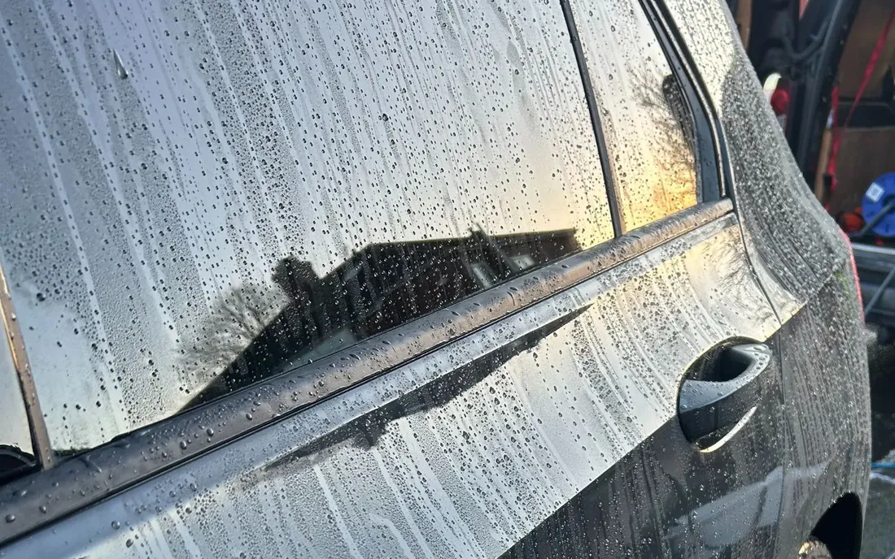
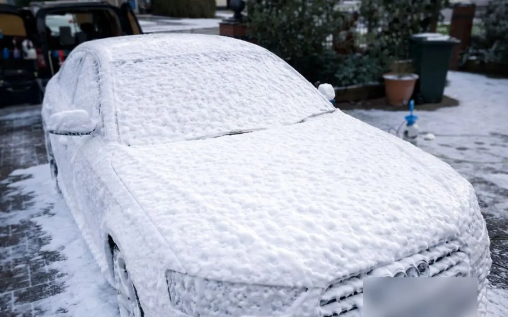
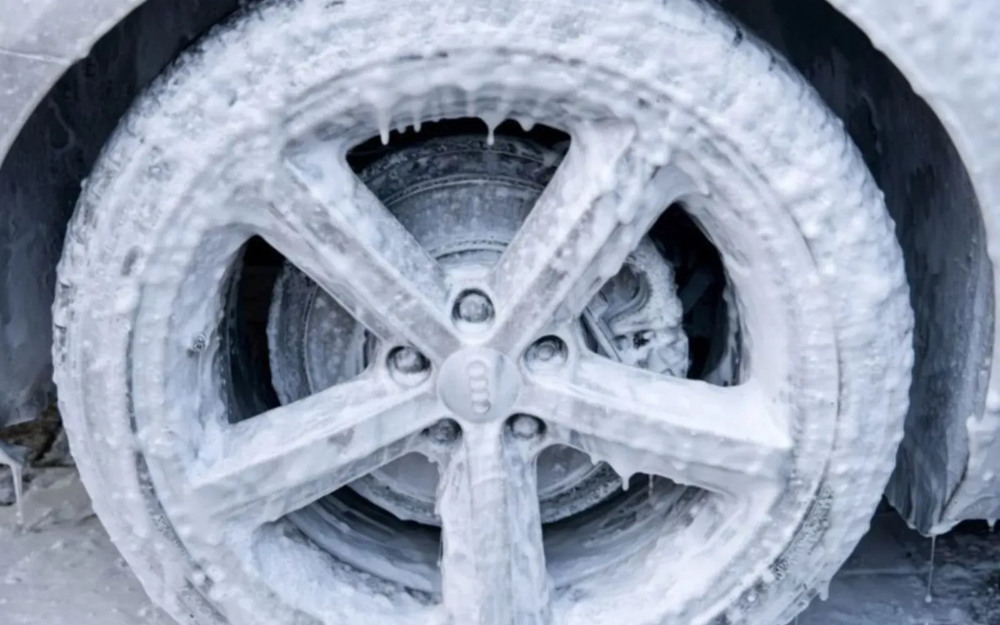
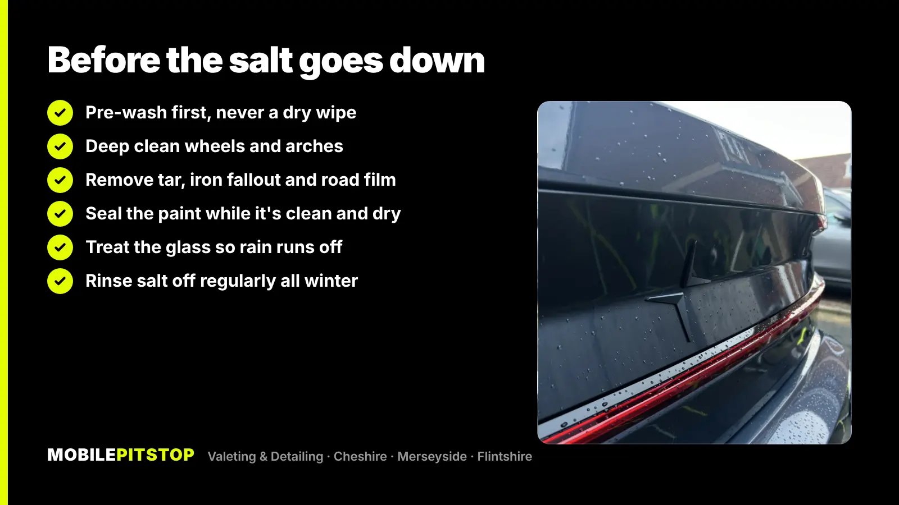

The best time to protect your car's paint for winter is before the gritters come out, while the weather is still dry and mild enough for a sealant to go on properly. In practice, for most of the North West, that means October or early November.
The job itself is simple to describe: get the paint, wheels and arches properly clean, take off the contamination a normal wash leaves behind, then put a layer of protection on top. That layer makes salt and road grime harder to stick and easier to rinse off all winter, so every wash is quicker and gentler on the paint.
Below is why winter is hard on paint, what you can do yourself, how we prepare a car for winter on our jobs and how to keep it right until spring.
Winter in Cheshire, Merseyside and Flintshire means months of wet roads, and from the first cold snap, salt and grit. Each of these causes its own problems:
Near the coast, on the Wirral for example, there's salty air to add to the salt on the roads. None of this will ruin a car in one winter, but it adds up year after year, and it's far easier to prevent than to correct.
A wax, sealant or coating is a thin layer that sits on top of the clear coat. Water beads up and runs off it rather than sitting flat, and dirt, salt and grime struggle to bond to it. When you wash, more of the muck comes away with the pre-wash and the rinse, so less of it needs scrubbing off with a mitt.

It's worth being clear about what protection can't do. It isn't armour: it won't stop stone chips, and it won't make the car self-cleaning. It also protects the paint in the condition it's in, so if the paint is already swirled or dull, those marks stay underneath. If that bothers you, the paint needs polishing before the protection goes on, not after.
Protection needs to go on clean, dry paint, and sealants and coatings need dry conditions to bond properly. That's easy in early autumn and much harder in a cold, damp December, when the car rarely gets a chance to dry out. It's one reason our ceramic coatings are booked by quote: the right weather is part of the job.
There's also the dirt itself. Get the car properly clean before the salt goes down, and the protection goes on fresh paint. Leave it until January, and the first step is getting weeks of salty film off the car before anything else can happen.
On a car that's been looked after, a careful wash and a spray sealant at home is a good start. Pick a dry, mild day and work in this order:
Where DIY usually stops: the paint feels rough when you run your fingertips over it after washing, there are tar spots along the sills, or a light-coloured car has orange specks that won't wash off. That's bonded contamination, and a sealant applied on top of it won't bond as well or last as long. It needs chemical decontamination and often a clay bar first.
For more on washing without causing marks, see our article on why hand car washes scratch your paint.
On our jobs the aim is the same as at home, just taken further: get the paint truly clean, then protect it while it's clean. For most cars heading into winter, that's our Protection Detail, done at your home or workplace.


The Protection Detail also includes everything in our In & Out Deep Clean, so the interior gets done too, which helps with the wet mats and muddy footwells winter brings. If the paint is dull or swirled, a 1-stage machine polish can be added before the protection goes on. If you only want the outside done, an Exterior Detail includes the chemical decontamination and finishes with protection applied.
Not sure which your car needs? Send us a few photos in daylight and we'll tell you straight, including when a cheaper service will do.

Protection makes winter washing easier, but it still needs washing. Salty grime left on for weeks wears protection down faster and starts to cling again. A few habits make a real difference:
If you'd rather not wash in the cold and dark, our Maintenance Wash is built for a car that's already been deep cleaned and protected: snow foam, a two-bucket hand wash, wheels and arches, and a hand dry. Booked regularly through the maintenance plan, it keeps the car at that standard at a lower price per visit.